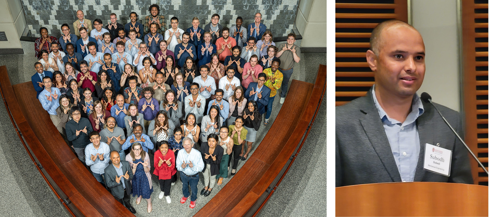
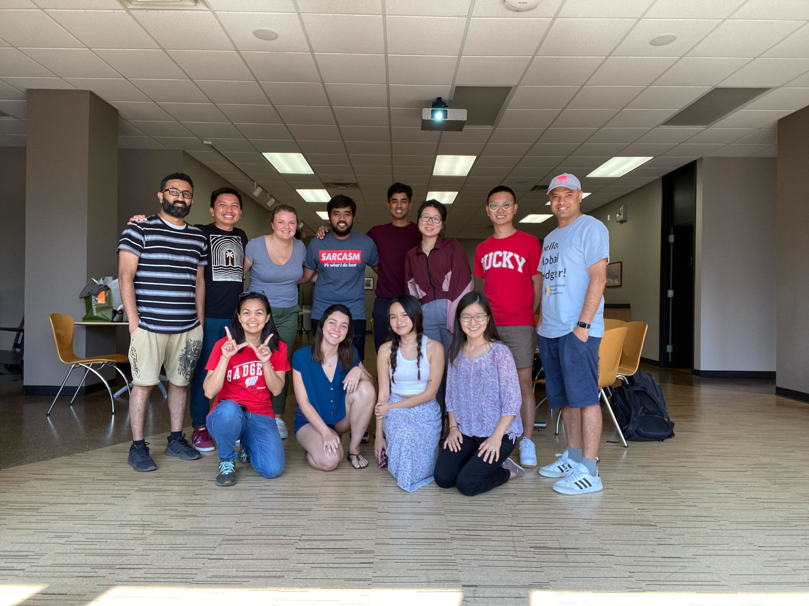

PhD Defense
Successfully defended my PhD in Mechanical Engineering at the University of Wisconsin-Madison.

Diversity Forum 2023_ UW-Madison
Panelist and Moderator at the Diversity Forum 2023, UW-Madison. for the session We are here: UW-Madison from an International Student Perspective

Solid Freeform Fabrication Symposium 2023
Presented my research on multi-load support optimization for LPBF at the SFF Conference in Austin, Texas.

Was selected for the prestigious Morgridge Entrepreneurial Bootcamp started by John Morgridge, philanthropist, former CEO/Chair of Cisco and UW Alum. Was selected to give a speech at the celebration dinner.
Was selected for the Wisconsin Experience Bus Trip along with 40 other student leaders on campus. Went around the state of Wisconsin to understand the community, met Native American leaders, Business Owners, National Park Rangers, and more.
Served as a member of International Student Advisory Board with the International Student Services at UW-Madison. Helped bring issues of international students with campus leadership, law enforcements and administrators, and make UW a better place for international students.
